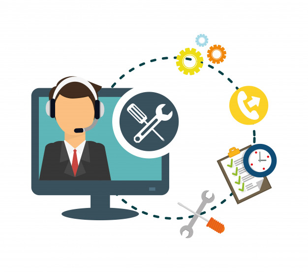

Inicio
Las computadoras portátiles, de escritorio y servidores que se utilizan todos los días en los comercios e industrias pueden llegar a reducir su eficiencia o tener fallos en su hardware y software, que requieran de servicio técnico en computadores para que puedan volver a sus operaciones óptimas y evitar que tengan un impacto en sus operaciones diarias. Hay muchos problemas comunes en los sistemas computacionales que sólo podrán ser solucionados por profesionales de TI y en Servers & Software contamos con técnicos e ingenieros que pueden ayudarlos y asesorarlos.